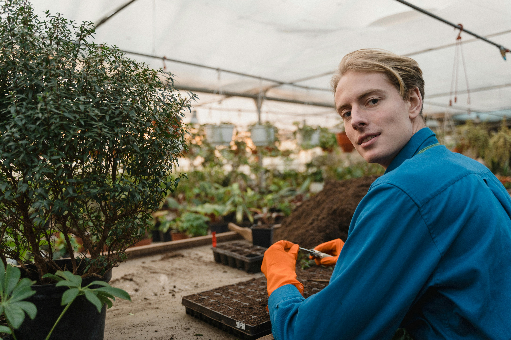

Growing Organic. Growing Local.
Sprout & Grow is a neighborhood plant nursery focused on sustainable, community-driven gardening. From starter plants to soil and tools, we help new and experienced gardeners grow healthier, more vibrant spaces at home.
Visit us for seasonal plant sales, hands-on workshops, and friendly advice. Whether you have a sunny balcony or a full backyard garden, we’ll help you find the right plants and the confidence to help them thrive.
Events & Workshops
